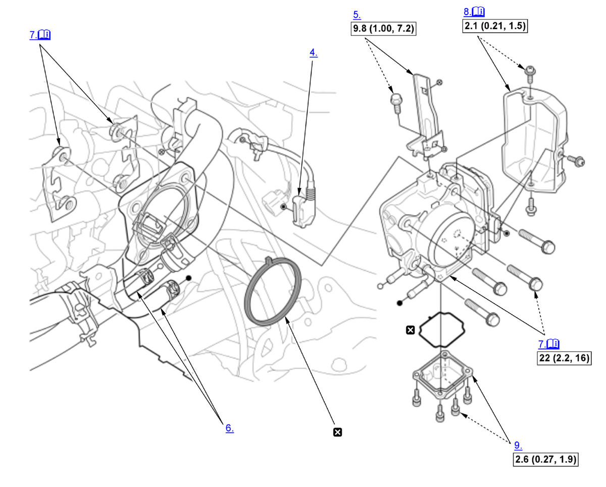
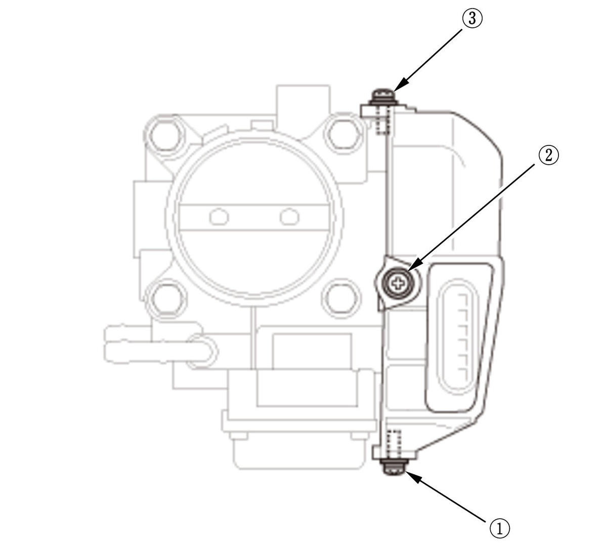

Removal and Installation: Procedure
NOTE:
Numbered call-outs in figure pertain to list numbers in following procedure.

Courtesy of HONDA, U.S.A., INC. |
Detailed information, notes and precautions |
 |
Torque: N.m (kgf.m, lbf.ft) |
 |
Replace |
- Intercooler Pipe Bracket - Remove
- 12 Volt Battery Base - Remove
- Throttle Body Inlet Pipe and Throttle Body Connector Tube - Remove
- Connector (Throttle Body) - Disconnect
- Harness Bracket - Remove
- Water Bypass Hose - Disconnect and Plug
- Throttle Body and Throttle Flange Plate - Remove
NOTE: Be careful not to drop the throttle flange plates to prevent other parts from damage.
Note for installation
- When tighten the throttle body mounting bolts in a cross pattern in three steps;
-
- Tighten the bolts until they sit on the throttle body.
- Tighten the bolts until the gasket is compressed and both parts are contacted.
- Tighten the bolts to specified torque.
- Throttle Body Cover - Remove (If Necessary)

Courtesy of HONDA, U.S.A., INC.Note for installation
Tighten the mounting screws to the specified torque in the numbered sequence shown.
- Throttle Body Lower Case - Remove (If Necessary)
- All Removed Parts - Install
1. Install the parts in the reverse order of removal. - Engine Coolant - Refill
- Throttle Position - Learn
1. Do the throttle position learn procedure.
NOTE: Turn the vehicle to the OFF (LOCK) mode and the ON mode as shown.